Suivi et pilotage d'un véhicule Škoda par l'API publique officielle MyŠkoda.
Documentation du plugin en version 0.851 beta, publiée le 14/10/2026. Elle décrit ce que permet l'API publique de Škoda à cette date (version 1.1.0). Škoda peut faire évoluer son API : ce qui est écrit ici, en particulier le quota de requêtes et la liste des commandes possibles, vaut pour cette version. Documentation de l'API chez Škoda (en anglais) : public.api.connect.skoda-auto.cz/docs, avec son journal des évolutions et sa référence technique détaillée, qui liste chaque demande que le plugin peut adresser à Škoda.
Prérequis : Jeedom 4.4 ou plus récent (le plugin est testé sur Jeedom 4.6), sous Debian 12 ou Debian 13. Debian 11 est en fin de vie (elle n'est plus maintenue depuis le 31 août 2026) : la logique est de passer à Debian 12 au minimum. Pour autant, le plugin y fonctionne aujourd'hui : un testeur fait tourner la version 0.81 sous Debian 11.11 avec PHP 7.4.33 (installation, mise à jour, lecture du véhicule, points de recharge, rapport de diagnostic). Le plugin n'a ni démon ni dépendance.
Langues : français et anglais. L'écran suit la langue de Jeedom (Réglages → Système → Configuration → Général) ; cette documentation existe dans les deux langues, et les boutons « Documentation » et « Changelog » de Jeedom l'ouvrent dans la langue de Jeedom ; le rapport de diagnostic et le log restent en français. Le nom des commandes est donné dans la langue de Jeedom au moment où le véhicule est ajouté.
Unités : le réglage « Unités d'affichage » de la configuration du plugin propose « Métrique (km) » ou « Impérial (miles) ». En impérial, la tuile, le journal de bord et ses exports affichent des miles, des mph, des miles par kWh (électrique) ou des miles par gallon britannique (thermique). Il vaut pour tous les véhicules et ne dépend pas de la langue. Seul l'affichage change : les valeurs des commandes restent en kilomètres, les températures en °C. Le réglage « Monnaie », juste à côté, choisit le signe affiché près des prix et des coûts (€, £, CHF ou $) ; aucun montant n'est converti, les prix se saisissent dans votre monnaie.
Sur le téléphone, dans l'application MyŠkoda : Profil, puis Maison intelligente. Créez une clé et copiez-la.
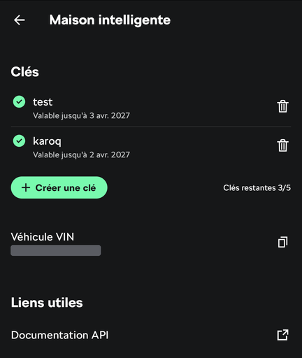
Cet écran liste vos clés (cinq au plus), permet d'en créer une et affiche le numéro de série du véhicule (VIN), à copier pour l'étape 3. Une clé vaut pour les véhicules choisis à sa création, et elle expire : sa date de fin est indiquée sous son nom.
Dans la configuration du plugin, rubrique « Clé API MyŠkoda », collez la clé puis sauvegardez. Les deux rythmes de lecture (à l'arrêt et en charge, et en déplacement) peuvent rester tels quels. Une fois la clé enregistrée et un véhicule ajouté, le bandeau en tête de cette page indique jusqu'à quand la clé est valable et si vos véhicules sont à jour ; le tableau « Vos véhicules » donne pour chacun son niveau de batterie ou de carburant, sa dernière remontée et les requêtes qui lui restent dans l'heure.
Dans le plugin, cliquez sur « Ajouter un véhicule » et saisissez son numéro de série (17 caractères). Le plugin vérifie auprès de Škoda que la clé couvre ce véhicule, puis crée l'équipement, nommé d'après la désignation que Škoda donne au véhicule, dans la catégorie Énergie. Cet ajout coûte deux requêtes sur le quota de l'heure : la vérification, puis la première lecture. Il reste à lui choisir un objet parent.
Škoda ne permet pas à un plugin de lister les véhicules d'un compte : c'est pourquoi le numéro de série est demandé, une fois par véhicule.
Les commandes sont créées à la première lecture, faite dès l'ajout du véhicule : seules celles que le véhicule fournit sont créées. Certaines sont créées masquées (câble verrouillé, coffre, capot, feux, mode de charge, expiration de la clé…) : elles se rendent visibles par leur case « Afficher ».
À LIRE : le journal de bord démarre vide.
Škoda ne fournit aucun historique aux plugins. Les trajets, les recharges, les pleins et les statistiques sont reconstitués par le plugin à partir de ce qu'il relève lui-même, à compter de son installation. Juste après l'installation, ces onglets sont donc vides : ils se remplissent au fil des trajets. L'historique affiché par l'application MyŠkoda n'est pas repris.
Le plugin crée les commandes à la première lecture, d'après ce que le véhicule fournit : une électrique n'a pas les commandes de carburant, une thermique n'a pas celles de la charge, et une commande d'action n'existe que si Škoda l'annonce pour ce véhicule. Les listes ci-dessous donnent le nom de chaque commande tel qu'il est créé dans un Jeedom en français, son type, et ce qu'elle vaut. Une commande binaire vaut 1 pour oui et 0 pour non. Les dates s'écrivent AAAA-MM-JJ HH:MM:SS, à l'heure de Jeedom. Quand un état est donné « tel que Škoda le transmet », la valeur est un mot en majuscules et en anglais ; la tuile, elle, l'affiche traduit. Les valeurs des commandes sont toujours en unités métriques (km, km/h, °C), même si le réglage « Unités d'affichage » est sur « Impérial (miles) » : ce réglage ne convertit que ce qui s'affiche sur la tuile et dans le journal de bord. Un scénario compare donc toujours des kilomètres.
ELECTRIC, GASOLINE, DIESEL, HYBRID, CNG ou LPG.CONNECT_CABLE (câble débranché), READY_FOR_CHARGING (prêt à charger), CHARGING (en charge), CONSERVING (maintien de la charge), DISCHARGING (décharge), CHARGING_INTERRUPTED (charge interrompue).MANUAL.MANUAL) et « Heures préférées » (PREFERRED_CHARGING_TIMES), sur un Elroq.Les quatre commandes « Point de recharge… » existent si des points de recharge sont définis dans l'application MyŠkoda. Sur un véhicule ajouté avant la version 0.82, elles portent leur ancien nom (« Profil de charge… »).
Fonction expérimentale, jamais essayée sur un véhicule (voir la rubrique « Fonctions expérimentales », plus bas). Ces commandes n'existent que si la case « Activer les fonctions expérimentales » est cochée dans la configuration du plugin et que le véhicule permet de modifier ses points de recharge ; elles sont créées à la lecture suivante. Trois commandes par point de recharge, masquées sur la tuile (elles servent dans les scénarios). Leur nom commence par celui du point de recharge au moment de leur création, ici « Maison » ; renommer le point dans l'application ne renomme pas les commandes, et Jeedom retire les apostrophes des noms.
Les plages ne servent que si le mode de charge « Heures préférées » est choisi : dans l'application (« Par heure », « Heures préférées » ; « Par type » donne « Recharge immédiate »), ou par la commande « Choisir le mode de charge ». Sinon, la voiture ne tient pas compte de leur programmation (constaté sur l'Elroq d'un testeur).
Les plages sont numérotées dans l'ordre où Škoda les donne, qui est celui de l'application (vérifié sur un Elroq) ; quand la case est cochée, la tuile les affiche numérotées (« Voir tous les points »). Le plugin relit le point de recharge juste avant de l'envoyer et ne change que la plage visée : limite, charge minimale, heures de départ et autres plages sont renvoyées telles quelles. Chaque modification coûte trois requêtes (relecture, envoi, relecture une minute après) ; une plage déjà réglée ainsi n'en coûte qu'une, rien n'est envoyé. Un numéro de plage qui n'existe pas ou des heures mal écrites sont refusés avant tout envoi, avec un message.
OFF, COOLING, HEATING, HEATING_AUXILIARY, VENTILATION, COMPLETED.Ces commandes existent quand vous avez saisi les échéances sur la page du véhicule (voir « Entretien »).
Une commande est transmise au véhicule ; son effet se lit à la relecture suivante, une minute plus tard. Ce délai se règle dans la configuration du plugin (« Réglages avancés », puis « Relecture après une commande », de 20 secondes à 2 minutes) : plus court, l'état suit plus vite dans un scénario ; trop court, la voiture n'a pas encore répondu et l'état ne changera qu'à la lecture d'après.
Chauffer la voiture avant de partir. Sur un véhicule électrique, c'est la commande « Démarrer la climatisation » (ou « Démarrer la climatisation à », avec une température) : elle chauffe ou rafraîchit l'habitacle selon la consigne, et ne demande aucun code. Elle s'utilise dans un scénario, par exemple le matin si la température extérieure est basse.
Préchauffage voiture non branchée : c'est vous qui décidez. Par défaut, le plugin ne demande rien de particulier : si la voiture n'est pas branchée, c'est son propre réglage (dans la voiture ou dans l'application MyŠkoda) qui décide si elle chauffe sur sa batterie ou si elle refuse. Quand le véhicule communique ce réglage, la commande info « Climatisation sans branchement autorisée » le montre ; tous ne le font pas (un Elroq, par exemple, ne le transmet pas). Pour que le plugin demande lui-même le chauffage sur batterie, cochez sur la page de l'équipement la case « Autoriser la climatisation sur la batterie, voiture non branchée ». Elle est décochée par défaut, pour qu'un scénario ne consomme jamais votre autonomie sans que vous l'ayez voulu : chauffer sur la batterie réduit l'autonomie disponible au départ.
Chauffage auxiliaire et code S-PIN. Certains véhicules thermiques et hybrides ont un chauffage auxiliaire (chauffage stationnaire). Škoda exige le code S-PIN pour le démarrer. Ce code est propre à chaque véhicule et à son utilisateur principal : saisissez-le sur la page de l'équipement du véhicule, champ « Code S-PIN de ce véhicule ». Il est enregistré chiffré dans Jeedom et n'est jamais écrit dans les logs. Les commandes « Démarrer le chauffage auxiliaire » et « Arrêter le chauffage auxiliaire » n'apparaissent que si le véhicule en est équipé ; la durée de chauffe est celle réglée sur le véhicule. C'est la seule commande qui demande ce code.
La tuile montre l'image du véhicule fournie par Škoda, les états (verrouillage, portes, vitres, câble), la batterie et l'autonomie, la charge et la climatisation avec leurs boutons, l'adresse de stationnement.
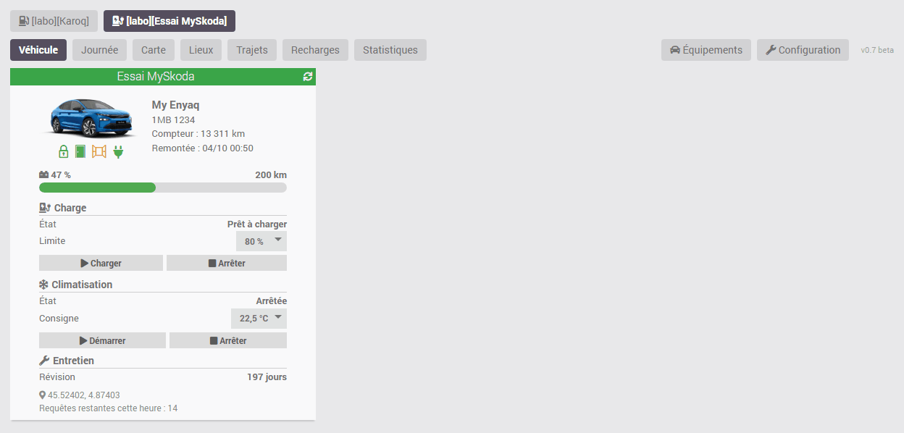
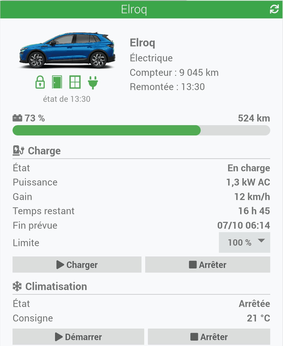
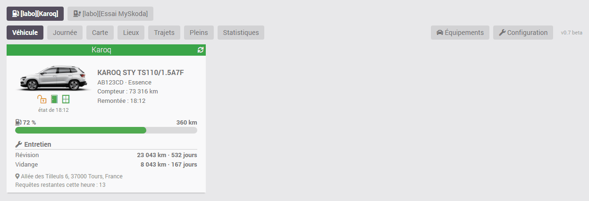
Sur ces captures, les adresses, la plaque et les lieux sont des exemples.
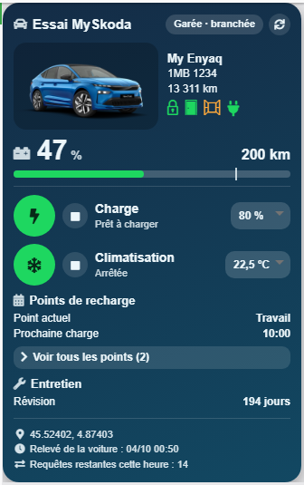
Le journal démarre vide à l'installation du plugin et se construit au fil des trajets : Škoda ne fournit aucun historique.
Activez « Afficher le panneau desktop » dans la configuration du plugin : une entrée MySkoda apparaît dans le menu Accueil. « Afficher le panneau mobile » fait de même dans l'application mobile et la version mobile de Jeedom. Le journal est le même sur les deux. La version mobile de Jeedom n'a pas de page de réglage : l'ajout d'un véhicule et la configuration du plugin se font dans la version ordinateur, vers laquelle deux boutons, « Véhicules » et « Configuration », renvoient en bas du journal mobile, pour les administrateurs.
Avec plusieurs véhicules, une rangée de boutons en haut du journal choisit celui que l'on regarde : tous les onglets portent sur ce véhicule. Le journal s'adapte à son énergie : batterie, kWh et recharges pour un électrique ; carburant, litres et pleins pour un thermique. Pour un hybride rechargeable, deux boutons, « Vue électrique » et « Vue carburant », choisissent l'énergie regardée.
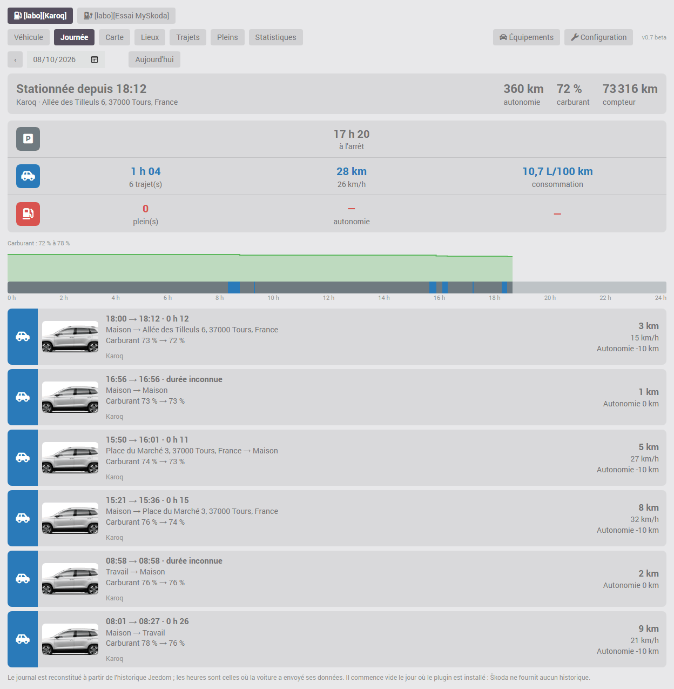
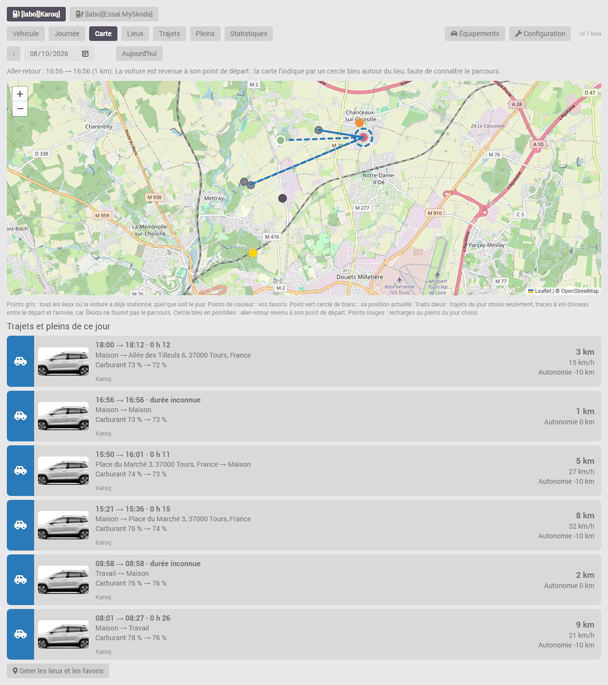
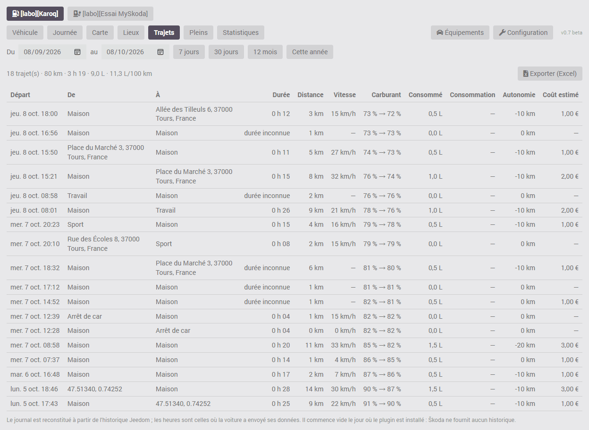
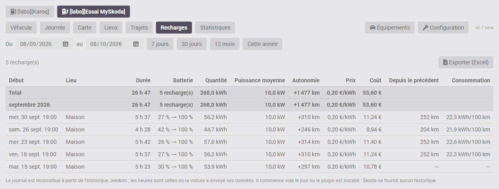
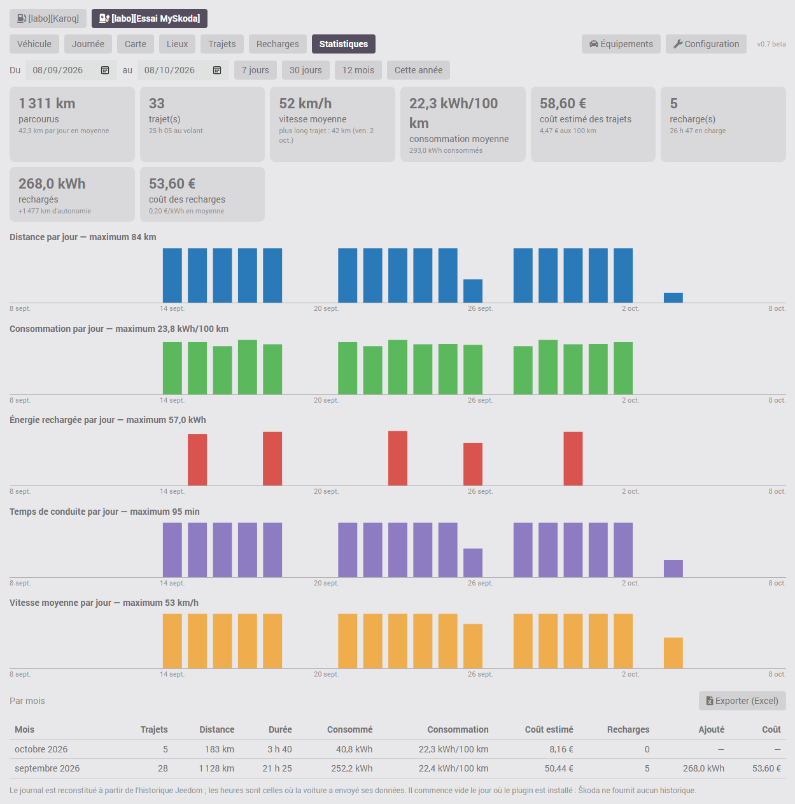
Les onglets Trajets, Recharges et Statistiques ont un bouton Exporter (Excel) : il produit un fichier CSV que Excel et LibreOffice ouvrent directement, avec une ligne par trajet, par recharge ou par mois.
Trajets et recharges sont reconstitués à partir de l'historique Jeedom des commandes « En déplacement » et « En charge ». La voiture envoie ses données à Škoda au départ et à l'arrivée ; le plugin date chaque valeur de l'heure de cet envoi, si bien que les heures des trajets sont exactes quel que soit le rythme de lecture. Un trajet fait en entier entre deux lectures est reconnu à l'avancée du compteur : sa distance est juste, sa durée est indiquée comme inconnue.
Arrêts courts. Škoda ne donne que le dernier état connu du véhicule, sans historique. Un arrêt de quelques minutes (déposer quelqu'un, retirer un colis) qui commence et se termine entre deux lectures du plugin n'est donc pas vu : plusieurs petits trajets enchaînés apparaissent comme un seul, dont la distance et les heures de départ et d'arrivée restent justes. En déplacement, le plugin lit toutes les 5 minutes par défaut, et garde ce rythme 10 minutes après l'arrêt et après le début ou la fin d'une recharge ; ce rythme se règle dans la configuration du plugin, dans la limite des 20 requêtes par heure imposée par Škoda. Ne décochez pas la case « Historiser » des commandes du plugin, et ne modifiez pas leur mode d'historisation : le journal de bord est entièrement tiré de l'historique Jeedom. Sans lui, il reste vide, et ce qui n'a pas été historisé ne peut pas être reconstitué après coup. Les commandes nécessaires sont : En déplacement, Kilométrage, Latitude, Longitude, Batterie et Autonomie électrique (ou Carburant et Autonomie carburant), En charge et Puissance de charge, ainsi que Câble branché si l'option « Recharge pilotée » est cochée. Si l'une d'elles n'est plus historisée, le journal l'indique en haut de page. Le volume est faible : une valeur n'est enregistrée que lorsque la voiture envoie un nouveau relevé.
Les lieux sont les adresses de stationnement données par Škoda, que le plugin mémorise au fil des arrêts. Škoda ne donne aucune position pendant qu'un véhicule roule : sur la carte, un trajet est un trait droit entre son départ et son arrivée, pas son parcours. Pour la même raison, un aller-retour sans arrêt (la voiture revient se garer là d'où elle est partie) n'a pas de trait : il est signalé par un cercle bleu en pointillés autour du lieu, et sa distance est celle du compteur.
Deux stationnements à moins de 60 mètres l'un de l'autre sont le même lieu. La position transmise par la voiture n'est pas toujours exacte : il arrive qu'elle s'écarte de plus de cent mètres alors que la voiture est garée au même endroit, ce qui crée un second lieu.
Onglet « Lieux » : vos lieux favoris. Cet onglet du journal de bord rassemble tout ce qui concerne les lieux : leur carte, l'ajout d'un favori et la liste des lieux connus. Un favori (Maison, Travail, École…) rattache à lui tout stationnement fait dans son rayon, et son adresse ne change plus. Seuls les administrateurs de Jeedom peuvent modifier les lieux ; les autres utilisateurs voient la liste sans pouvoir la changer.
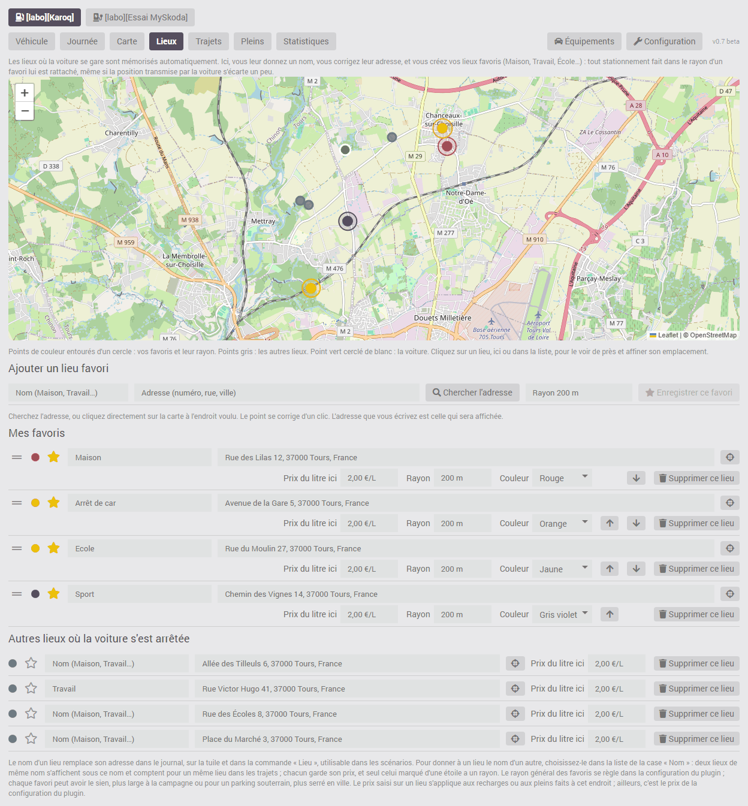
Pour ajouter un favori, donnez-lui un nom, puis placez son point de l'une de ces façons : écrivez son adresse et cliquez sur « Chercher l'adresse », ou cliquez directement sur la carte à l'endroit voulu (un nouveau clic corrige le point), et terminez par « Enregistrer ce favori ». L'adresse que vous écrivez est celle qui sera affichée : c'est le moyen d'avoir la bonne adresse quand celle que Škoda donne pour votre domicile est fausse. La recherche d'adresse est faite par votre Jeedom auprès du service d'OpenStreetMap, uniquement quand vous cliquez sur le bouton ; le clic sur la carte n'envoie rien.
Pour revoir un lieu déjà enregistré, cliquez sur son point sur la carte ou sur le bouton en forme de cible de sa ligne, après l'adresse : la carte s'en approche et montre son emplacement en rouge. Un clic sur la carte le déplace ; « Valider ce point et vérifier son adresse » valide, « Annuler » laisse le lieu tel quel. À la validation, que le point ait bougé ou non, votre Jeedom demande au service d'OpenStreetMap l'adresse de ce point et vous la propose si elle diffère de l'adresse affichée : vous enregistrez avec cette adresse, ou vous gardez l'adresse actuelle. C'est le moyen de corriger un lieu bien placé dont l'adresse est fausse. Si l'adresse n'est pas trouvée, seule la position est enregistrée.
Un lieu ordinaire qui se trouve dans le rayon d'un favori ne sert plus : les stationnements faits à cet endroit sont rattachés au favori. Si vous ne lui avez donné ni nom, ni prix, ni adresse, il est retiré de la liste. Sinon il est gardé avec la mention « couvert par le favori », et c'est à vous de le supprimer ou de réduire le rayon du favori.
La liste est en deux parties. « Mes favoris » vient en premier : vous les rangez dans l'ordre que vous voulez en les glissant par la poignée à traits horizontaux, au début de la ligne, ou avec les flèches placées dans les réglages de la ligne, et chaque favori a sa couleur, choisie dans une liste et reprise sur les cartes du journal (Maison en vert, École en rouge…). « Autres lieux où la voiture s'est arrêtée » vient ensuite, les plus récents en tête ; au-delà de six, les plus anciens sont repliés derrière un bouton.
Chaque ligne montre l'essentiel : la couleur, l'étoile, le nom, l'adresse et la cible qui ouvre le lieu sur la carte. Les réglages plus rares suivent : le prix du kWh ou du litre à cet endroit, le rayon et la couleur d'un favori, la suppression. Sur un écran d'ordinateur ils sont toujours visibles, à la suite sur la ligne ; sur un téléphone, ils se déplient par la flèche en bout de ligne.
Un lieu déjà connu devient favori en lui donnant un nom et en cliquant sur son étoile, qui passe au jaune ; un second clic le retire des favoris. Son adresse se corrige dans la liste ; une adresse corrigée n'est plus remplacée par celle de Škoda. Le rayon général des favoris se règle dans la configuration du plugin (200 mètres par défaut) ; chaque favori peut avoir le sien (de 10 à 5 000 mètres), plus large à la campagne ou pour un parking souterrain où la position est imprécise, plus serré en ville. Si Jeedom connaît les coordonnées de votre domicile (configuration générale de Jeedom), un bouton propose de créer le favori « Maison » à cet endroit, sans rien saisir.
La case « Nom » propose la liste des noms déjà donnés : pour donner à un autre lieu le nom d'un lieu existant, choisissez-le dans cette liste plutôt que de le retaper. Deux lieux portant le même nom s'affichent sous ce nom et comptent pour un même lieu dans les trajets ; chacun garde son propre prix, et seul celui marqué d'une étoile a un rayon. Le bouton « Supprimer ce lieu » (corbeille), dans les réglages de la ligne, retire un lieu créé par erreur ; les trajets déjà enregistrés ne sont pas modifiés. Le plugin garde 300 lieux par véhicule ; supprimer un équipement efface ses lieux.
Le nom donné à un lieu remplace son adresse dans le journal et sur la tuile. La commande « Lieu » le porte aussi : elle sert de déclencheur ou de condition dans un scénario (par exemple « Lieu » égal à « Maison »).
Recharge pilotée par un scénario (surplus solaire, batterie domestique, heures creuses). Par défaut, le journal compte une recharge à chaque fois que la voiture se met à charger. Si un scénario démarre et arrête la charge au fil de la journée, par exemple pour suivre la production de panneaux solaires, cela donne une multitude de petites recharges, dont l'énergie ne peut pas être calculée. Dans ce cas, cochez la case du champ « Recharge pilotée » (« Charge pilotée par un scénario ») sur la page de l'équipement du véhicule concerné : le journal compte alors une seule recharge par branchement du câble, toutes reprises comprises. Il affiche la durée de charge réelle, le nombre de reprises et le temps pendant lequel le câble est resté branché ; l'énergie, la puissance moyenne et le coût sont calculés sur l'ensemble. Pour une recharge ordinaire, d'un seul tenant, l'option ne change rien. Elle s'applique aussi aux recharges déjà enregistrées, à condition que la commande « Câble branché » ait été historisée ces jours-là : une recharge faite sans cet historique reste comptée reprise par reprise. Elle se décoche sans rien perdre. Pour ces scénarios, voyez aussi le réglage « Relecture après une commande » de la configuration du plugin.
Consommation. Škoda ne donne le niveau de batterie ou de carburant qu'en pourcentage entier. Une consommation n'est donc affichée que si le niveau a baissé d'au moins 5 points : pour un trajet isolé, cela demande un trajet assez long ; pour une journée, un mois ou une période, le calcul porte sur le total (ce qui a été consommé, divisé par la distance), ce qui le rend fiable. Dans l'onglet Recharges ou Pleins, chaque ligne donne aussi la distance parcourue et la consommation depuis la recharge ou le plein précédent : c'est le chiffre le plus juste.
Des valeurs que Škoda ne fournit pas sont à saisir pour obtenir tous les chiffres : sur l'équipement, la capacité utile de la batterie (pour les kWh) ou la contenance du réservoir (pour les litres) ; et le prix du kWh ou du litre de carburant (pour les coûts). Le prix se saisit à deux endroits : un prix général dans la configuration du plugin, et, dans l'onglet « Lieux », un prix propre à un lieu (votre domicile, une borne publique), au réglage « Prix du kWh ici » ou « Prix du litre ici » de sa ligne. Pour le carburant, un prix du litre peut aussi être saisi sur l'équipement d'un véhicule : il remplace alors le prix général pour ce véhicule. Une recharge est comptée au prix du lieu où elle a été faite, à défaut au prix général ; le coût d'un trajet est estimé au prix général.
Škoda ne transmet aux plugins ni les échéances de révision et de vidange, ni le rapport d'état du véhicule. Le plugin propose donc un suivi à saisir à la main, dans la page de l'équipement : révision, vidange et contrôle technique.
Pour la révision et la vidange, indiquez l'échéance (kilométrage au compteur et date) ; pour le contrôle technique, la date seule. Vous pouvez aussi recopier ce qu'affiche l'application MyŠkoda (Inspecter, Service) sous la forme « dans tant de km » et « dans tant de jours » : le plugin convertit à l'enregistrement. Il décompte ensuite les kilomètres et les jours restants (commandes « Révision : kilomètres restants », etc., utilisables dans les scénarios), les affiche sur la tuile, et prévient dans le centre de messages quand une échéance passe sous le seuil d'alerte (1 000 km ou 30 jours par défaut, réglables). Après un entretien, saisissez la nouvelle échéance.
Škoda peut répondre qu'une partie des données (verrouillage et ouvrants, carburant, kilométrage, position…) existe sur le véhicule mais est désactivée. Le plugin l'affiche sur la tuile, dans la commande « Services désactivés » et dans le centre de messages. Cela ne se règle pas dans Jeedom : il faut vérifier dans l'application MyŠkoda que les services en ligne du véhicule sont actifs (licence en cours de validité), que le consentement au partage des données est donné, et que le véhicule n'est pas en mode privé.
Certaines fonctions sont écrites d'après la documentation de Škoda mais n'ont encore jamais été essayées sur un véhicule. Elles sont réservées à ceux qui cochent « Activer les fonctions expérimentales » dans la configuration du plugin (case décochée par défaut) ; décochée ensuite, leurs commandes restent en place mais sont refusées, pour ne pas casser un scénario. Le rapport de diagnostic indique si la case est cochée.
Les essais à faire et ce qu'il faut renvoyer sont décrits sur la page Fonctions expérimentales : essais à faire. Une fonction cesse d'être expérimentale quand des essais réels l'ont confirmée ; ses commandes gardent alors leur nom.
Joignez d'abord le rapport de diagnostic : dans la configuration du plugin, rubrique « Diagnostic et support », le bouton « Générer un rapport de diagnostic » affiche un texte que vous copiez ou téléchargez avec les deux boutons placés dessous. Il donne la version du plugin, de Jeedom, de PHP et de Debian, les réglages, et pour chaque véhicule son modèle, ses options, ses commandes, l'heure des dernières lectures, le quota restant, les valeurs principales, le nombre de trajets et de recharges des sept derniers jours, puis les messages et les dernières lignes d'erreur du plugin. Il ne contient ni clé, ni code S-PIN, ni numéro de série, ni plaque, ni nom d'équipement, ni lieu, ni adresse, ni position : les véhicules y sont numérotés, et il peut être transmis tel quel.
Si on vous le demande ensuite, joignez aussi le log myskoda au niveau Debug (configuration du plugin, cadre « Logs et surveillance », puis menu Analyse → Logs). Ce log contient les réponses de Škoda, dont le plugin retire le numéro de série, la plaque, l'adresse et les coordonnées de stationnement avant de les écrire. La clé API et le code S-PIN n'y figurent jamais. Le nom que vous avez donné à l'équipement, lui, y apparaît.
Il arrive que Škoda réponde sans aucune donnée du véhicule, chaque rubrique étant « indisponible » : cela s'observe notamment pendant qu'un véhicule roule. Le plugin garde alors les dernières valeurs reçues et l'indique sur la tuile et en haut du journal de bord, avec l'heure depuis laquelle cela dure (commande « Données Škoda indisponibles depuis »). Rien n'est à faire : un trajet ou une recharge en cours se termine à la bonne heure dès que Škoda répond de nouveau, parce que la voiture date elle-même ses relevés.